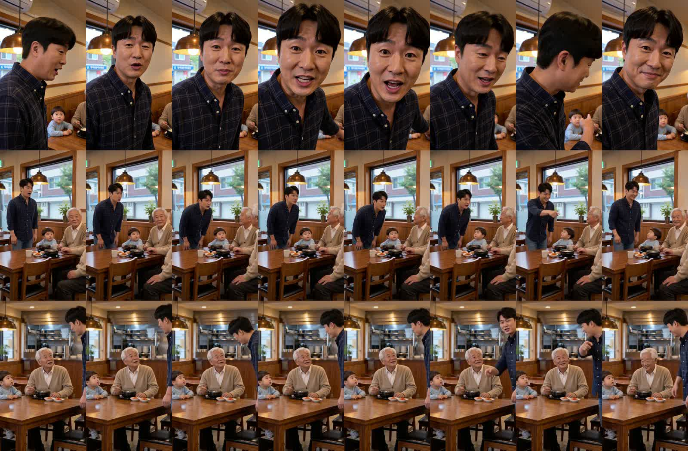
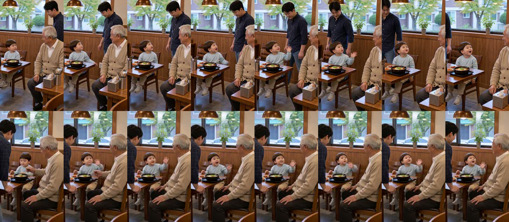
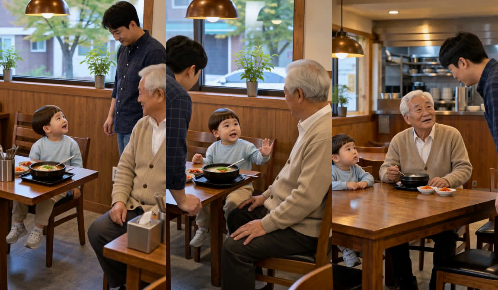
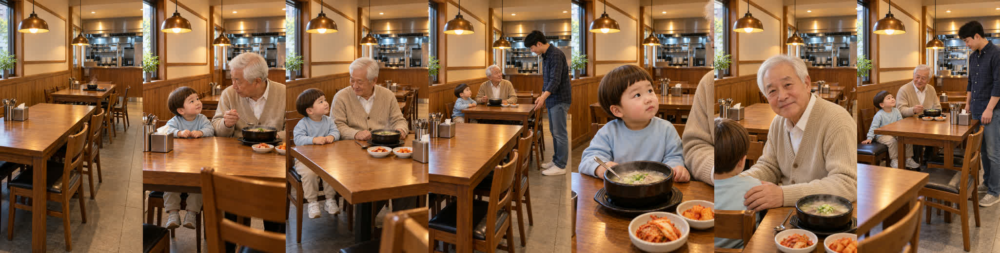

국밥집 3컷·6컷 — 지금 방식 vs 옛 방식 (2차)
2차는 할아버지 중복을 막으려고 «왼쪽부터 도윤이·할아버지·아빠, 정확히 세 사람, 시트의 세 모습은 한 사람의 앞·옆·뒤»를 넣었습니다. 시작 그림·대사·길이는 그대로입니다.
요약
- 할아버지 중복 해결: 3컷 2차에서 할아버지 한 명, 배치도 시작 그림 그대로(도윤이·할아버지·아빠).
- 도윤이 나이: 옛 방식이 3컷·6컷 모두 더 동그랗고 통통한 아기 얼굴, 작은 몸.
- 연기: 옛 방식은 아빠가 몸을 숙여 손짓, 할아버지·도윤이가 아빠를 보며 반응. 지금 방식은 아빠 혼자 렌즈를 보고 말함.
- 아빠 얼굴: 옛 방식 3컷 2차는 아빠가 화면 오른쪽 끝에 반쯤 걸려 얼굴 비교가 덜 됩니다(지금 방식처럼 다른 사람으로 바뀌지는 않음).
- 6컷 옛 방식: 배치가 시작 그림과 달라짐 — 아빠가 앞쪽 왼쪽에서 등을 보이고, 할아버지는 옆모습. 시트를 받으면 H3가 장면을 다시 짜는 경향이 남아 있습니다.
- 할아버지 자리(대표님 지적): 시작 그림 자체가 테이블을 90도 돌려 할아버지를 끝자리에 앉혔기 때문에 두 방식 모두 그대로 남아 있습니다. 키프레임을 다시 그려야 고쳐집니다.
3컷 (아빠 «아이고 죄송합니다, 우리 자리는 저기야!»)
지금 방식
옛 방식 1차
할아버지 두 명 · 배치 바뀜
옛 방식 2차
할아버지 한 명 · 배치 그대로

위부터 지금 · 옛 1차 · 옛 2차 (0.56초 간격)
6컷 (도윤 «아빠도 요기! 할아버지는 도유니 친구예요!»)
지금 방식
옛 방식

위 지금 · 아래 옛 방식 (0.8초 간격)
같은 순간 크게 보기

왼쪽 6컷 지금 · 가운데 6컷 옛 방식 · 오른쪽 3컷 옛 방식 2차
할아버지 자리 — 세트 vs 키프레임

맨 왼쪽 = 승인 세트(테이블이 벽을 따라 앞→뒤, 의자는 긴 변에만). 나머지 = 국밥집 키프레임 1~6컷. 2·3·4·6컷은 테이블이 돌아가 할아버지가 주방을 등지고 끝자리에 앉음.